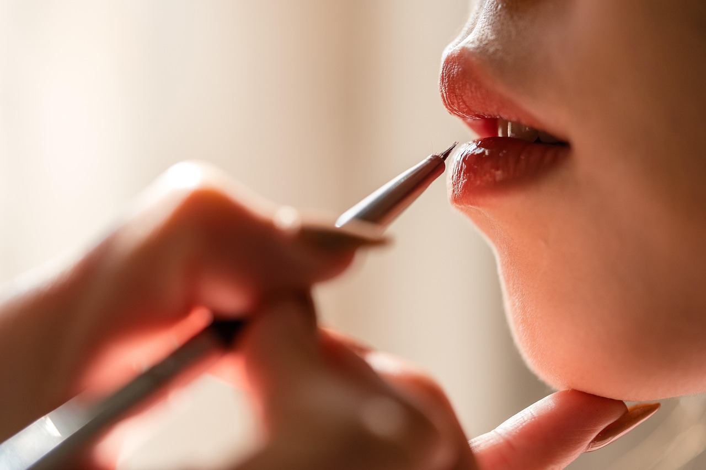
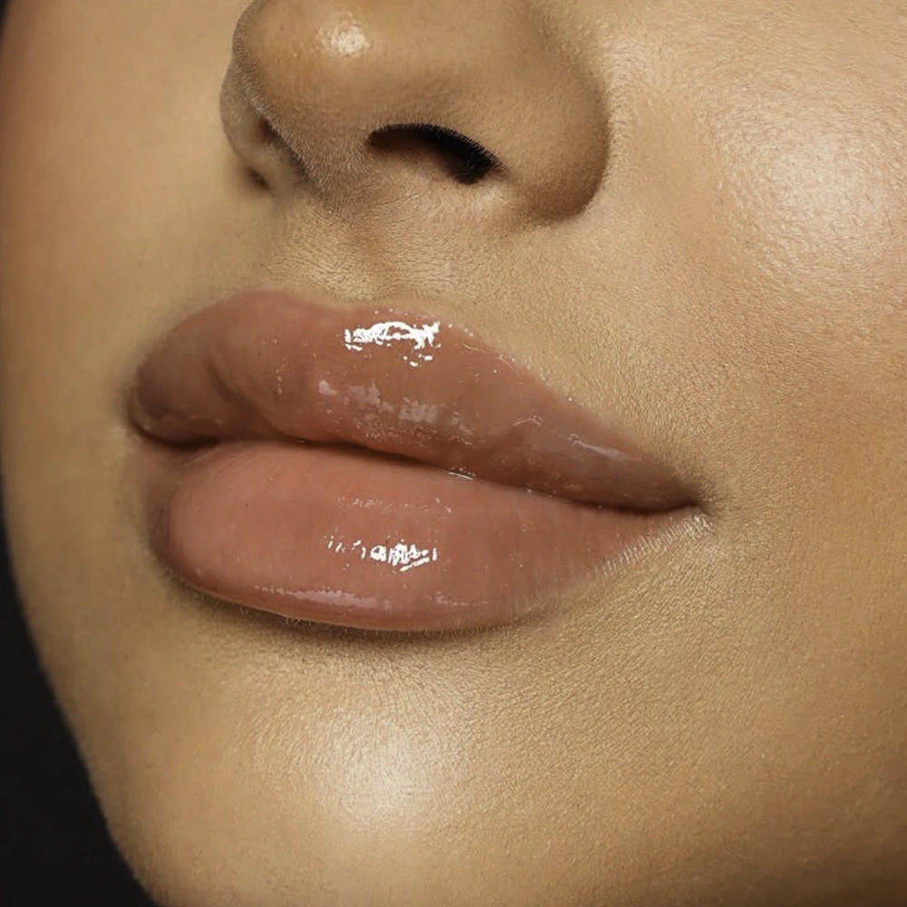
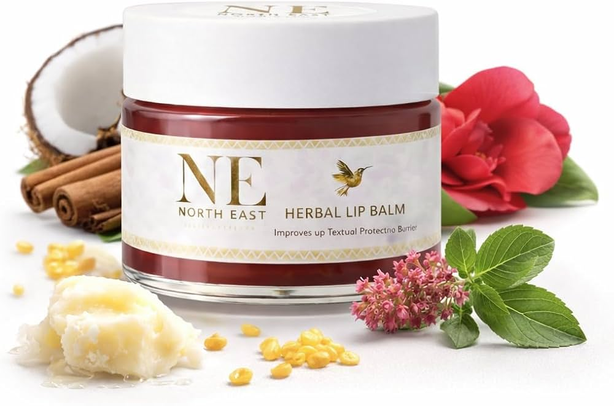
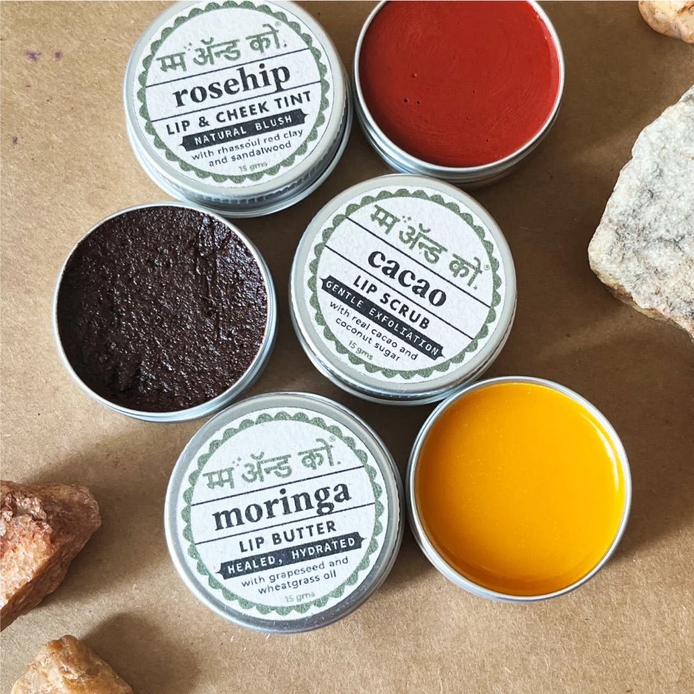

Simple tips for soft, healthy and pink lips
Lips are one of the most delicate parts of our skin. They do not have oil glands like the rest of the skin, which means they can easily become dry, cracked and chapped. Proper lip care helps keep them soft, smooth and healthy.


Natural ingredients are very helpful in keeping lips moisturized and healthy. These ingredients provide hydration and nourishment.


Taking care of your lips daily can prevent dryness and keep them soft and naturally beautiful.